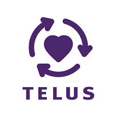
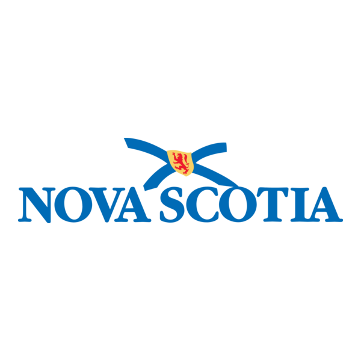

2-1-1
Free, confidential directory to community, government, and social service providers and programs throughout Nova Scotia. 211 can also direct you to men’s, women’s and all-gender helplines.
211
Visit WebsiteN.S. Mental Health and Addictions
Intake line for addiciton Services.
Monday to Friday, 8:30am – 4:30pm (available until 8pm on Tuesdays)
Speak with a NS Health Team member or complete an online survey to determine what services may be available to help you.
1-855-922-1122
Visit Website
Telus Lifeworks EAP
App available on iOS and Android
Information tailored to CBRM employees to support a variety of overall wellness aspects. Resources, programs, and assessments to help best meet your individual needs.
1-800-387-4765 1-844-880-9142
Visit WebsiteBoots on the Ground
A confidential, 24/7 peer-support line for first responders. It is staffed by volunteer first responders to provide peer support from someone who has had similar experience.
1-833-677-2668
Visit Website
NS First Responders Mental Health
Website with tools and resources specifically for Nova Scotian First Responders, developed by a steering committee including current and former first responders.
Visit WebsitePSPNet
Internet delivered cognitive behavioural therapy (iCBT) for first responders and their spouses/significant others to help improve their mental health. Courses can be self-guided or done with guidance from a trained therapist.
Visit WebsiteWarrior Health
Confidential, anonymous, on-demand, stigma-free resources for public safety personnel and their families. They are available 24/7 and while they are based in Ontario, they will not turn anyone away.
App available on iOS and Android
Visit Website
Landing Strong
Organization based in Windsor, NS to support first responders experiencing the effects of operational stress injuries. Providing in-person and online programs for first responders, partners, and families.
Visit Website
Society of Atlantic Heroes
Provides accommodations to first responders who need to be in Halifax for medical appointments for themselves or their family.